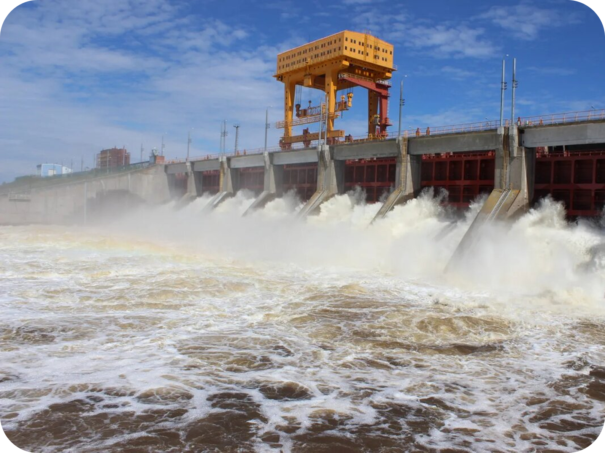

Экскурсии на предприятие ПАО «РусГидро» - «Воткинская ГЭС»
18 апреля мы всей группой под руководством Погребецкого И.В. совершили экскурсию на предприятие ПАО «РусГидро»- «Воткинская ГЭС», хочу поделиться с Вами своим мнением об увиденном. Примерно в 10:00 мы пришли на пост «РусГидро»- «Воткинская ГЭС», со строгим пропускным контролем, где требовался паспорт, сразу чувствуется уровень организации. Там нас встретил экскурсовод, и мы совершили обход по территории, любовались пейзажем, и меж тем, знакомились с аппаратами различных габаритов. Далее нам показали многоликий, памятник в виде мужчины, который в руках держит циркуль и отбойный молоток. Это странное сочетание объясняется тем, что во времена строительства ГЭС, а именно с 1955 по 1966 годы туда прибыла строительная группа, и далеко не каждый из них владел нужным образованием, поэтому они были вынуждены делать не свою работу. Так объясняется облик этого памятника. Возвёл его первый директор предприятия. Затем мы отправились в музей, где нам рассказывали про первых людей, которые принимали не маловажное значение в развитии предприятия. Мы посмотрели на ландшафтные макеты местности и на картины с начальным видом, на этом наша экскурсия подошла к концу. Проведя небольшой опрос, (в устной форме) стало ясно, что всем понравилось. Эта экскурсия оставила у нас положительное впечатление и дала мотивацию к хорошей учебе, ведь работать на таком предприятии очень престижно.
